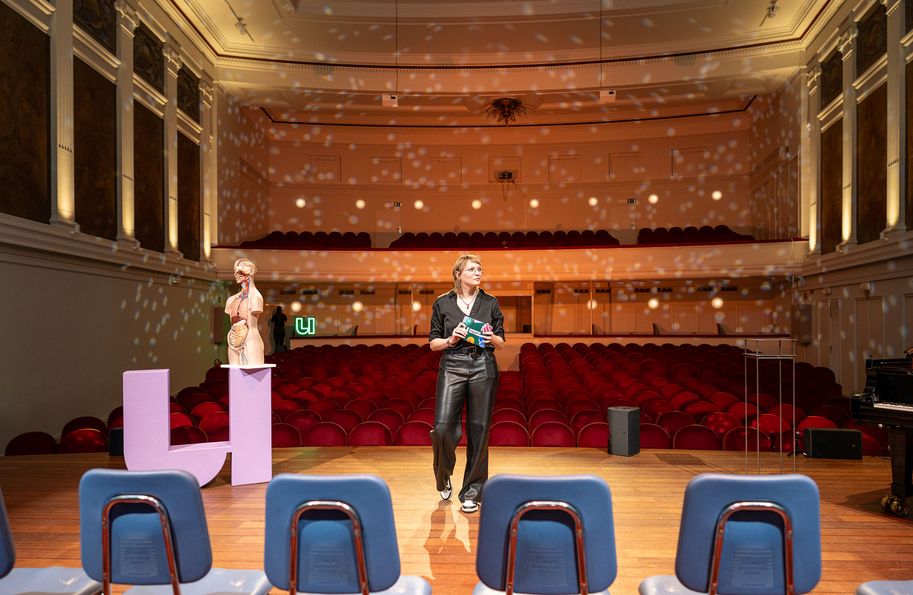
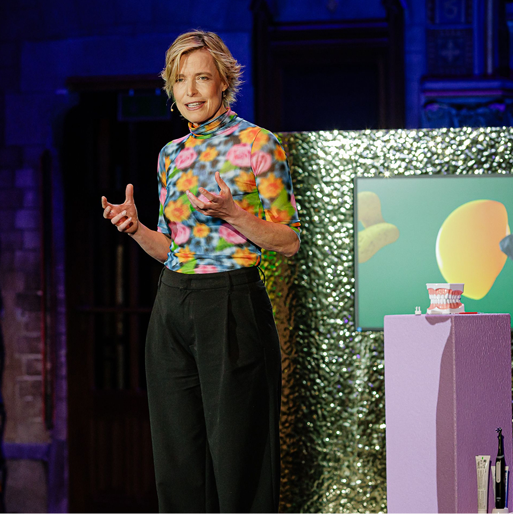

Workshop voor jonge onderzoekers
Hoe kom je op
onze radar?
Katleen Bracke

Aan jou
Welk format
kies jij?
Kies één. Vertel waarom.


Twee kanten
Enthousiasme
trekt aan.
Expertise blijft hangen.

Workshop voor jonge onderzoekers
Katleen Bracke

Aan jou
Kies één. Vertel waarom.

Twee kanten
Expertise blijft hangen.